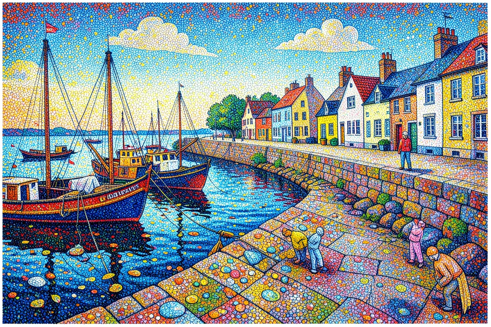

Картина из мелких отдельных точек чистого цвета, которые глаз смешивает на расстоянии. Сцена неподвижна и упорядочена, построена по теории цвета, а не плавным переходом.

Главная идея
Цвет — наука: чистые точки рядом смешиваются в глазу со световой яркостью выше, чем смесь на палитре, и картину можно построить по правилу.
Принципы дизайна
Кладите каждую точку отдельным касанием чистого цвета 2–5 мм в поперечнике, оставляя между ними видимый фон.
Смешивайте сопоставлением: ставьте дополнительные пары, например оранжевое и синее, рядом, чтобы глаз их сливал.
Строите каждую область из трёх элементов: собственный цвет, свет (тёплый) и тень (холодное дополнение), плюс отражённый цвет.
Держите сцену неподвижными простыми массами: фриз из фигур в профиль и анфас в ясном упорядоченном пространстве.
Планируйте картину по сетке или каркасу золотого сечения, с сильными вертикалями и горизонталями.
Добавляйте нарисованную кайму цвета, контрастного краю сцены.
Берите матовую меловую поверхность, чтобы точки оставались чистыми и яркими.
Антипаттерны
Сплавленный или лессированный цвет, скрывающий точку
Спонтанные быстрые неровные мазки
Тёмные, чёрные или коричневые тени
Мягкие потерянные края, переходящие в соседнюю форму